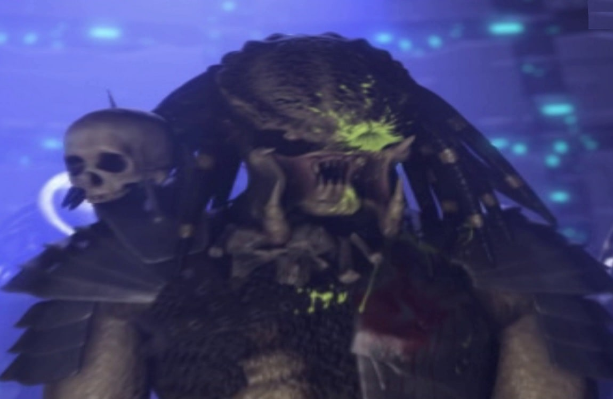

The Yaujta
Introduction/Origin
The predators species is called The Yaujta. they are from the planet Yaujta Prime (how creative). They
are a sub species, coming from a species called The Hish, who were pretty much the same thing, but less
tech based. At some point in their history, they were enslaved by a species known as The Amengi who are
the source of the prototypes predator weapons, like the plasma blaster.
What Makes them so dangerous
What makes the Yaujta so dangerous is their access to technology, their hunting abilities and their
skills with any weapons they come across
Another factor that makes them dangerous is the fact that their weapons are nearly limitless. such as
- Plasma Canon
- Eagle Drones
- Spear
- Cloaking Tech
- Nanotech Armour
- Thermal Vision
- Ships
Most powerful Yaujta
-
Predator King:
The Predator King, reffered to as The Grendal King by Ursa the female Viking, appeared in Predator,
Killer of killers. the Predator king entered an arena on Yautja Prime to oversee a gladiator fight
between a World War 2 soldier, a female Viking, and a Ninja from Feudal Japan. The winner of the
fight was supposed to fight the Grendel King, but the they teamed up against him and stole his ship.
The King was wounded but survived.
-
Prince
Prince is a strong predator, he has had a 20 year long rivalry with a specific marine,
Vassili Rykov, that marine was responsible for his captrue and stealing his mask, which is a big
dishonor to a predator. during his escape, Prince took out dozens of Aliens, Colonial Marines,
combat synthetics, two Predaliens, three Praetorians, an Alien Queen and finally got revenge on
Vassili Rykov, reclaiming his mask, and taking Rykov's spine as a trophy
-
Scarface
Scarface was a predator, who went on a hunt in the 1930s, this hunt led to his
technology being taken by humans. He then became known as "A Dishonored" Predator. He was then
banished to a remote planet, for 100 years. after those 100 years, he returned to the city to
reclaim his technology and honour. He wiped out 2 crime families in a day.

-
Ahab:
Ahab was given the name from the character of Captain Ahab, from a novel. he is known as
a dangerous predator due to his persistance, strength and above average stamina and speed. he is one
of the only known predator to fight and kill an engineer. he has also hunted many humans, animals
and other aliens.
Fun Trivia
The Predator was originaly knows as The Hunter
The original Predator design was much taller and slimmer, more bug-like.
The Predator, like most others on this list, has fought both Marvel and DC characters, like Batman and Spider-man.
Predators didn't actually create their tech, they stole it from a race they were enslaved by.
Table of Statistic Rating
| Category |
Rating |
| Strength |
9/10 |
| Tech |
10/10 |
| Defense |
9/10 |
| Adaptability |
10/10 |
| Threat level(Single) |
9/10 |
| Threat level(Group) |
9/10 |